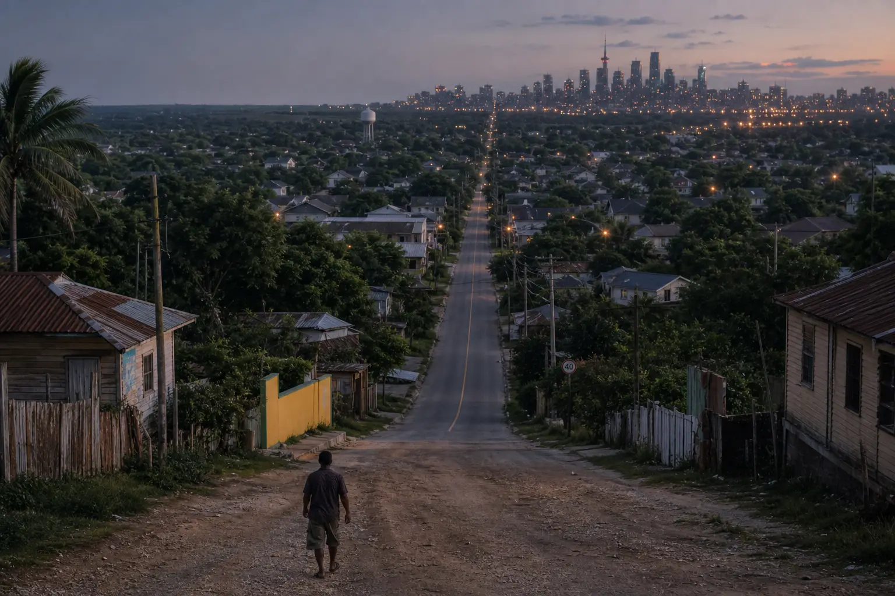
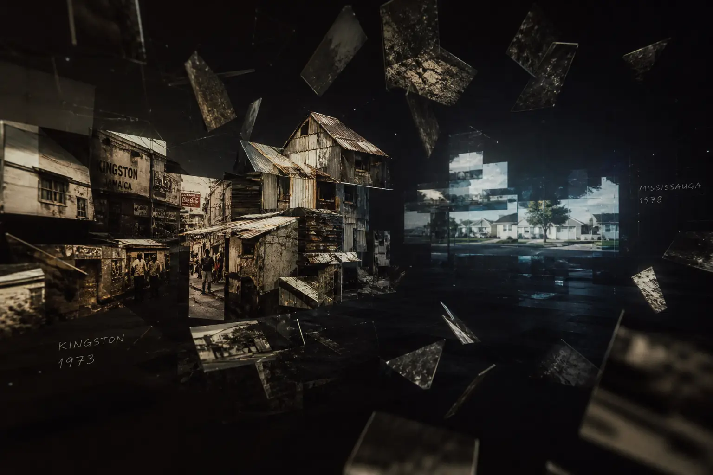
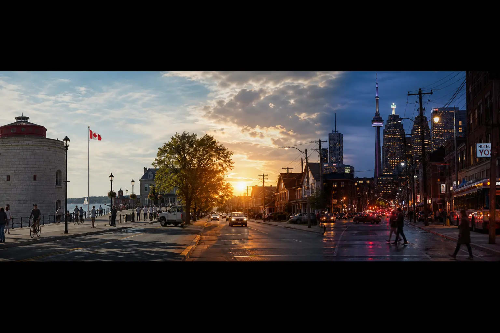
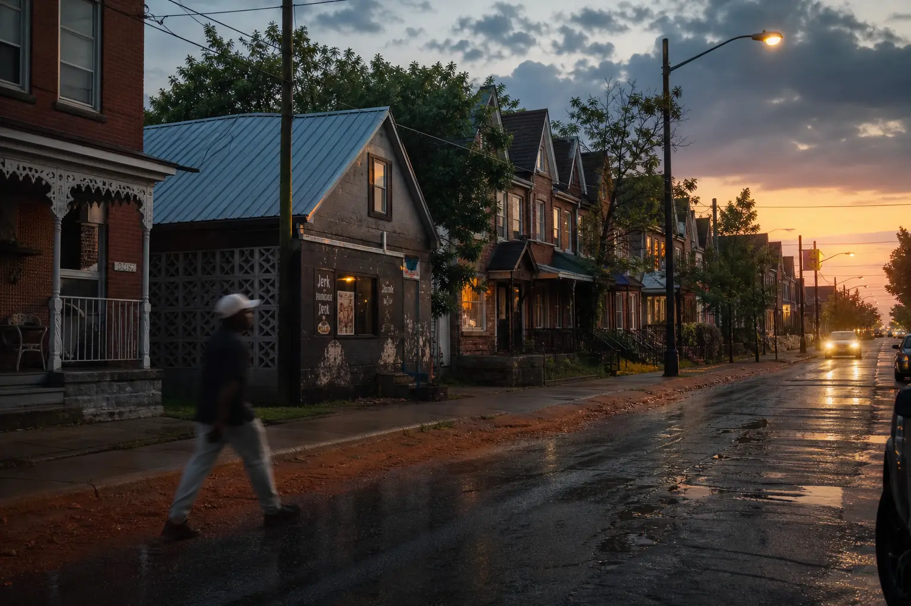

36TY · Concept exploration · not a polish pass
The current procedural street is a prototype chassis. These four ideas are different machines — not four skins on the same road.
Exploration rule: do not pick “what looks coolest.” Pick the answer to why this has to be 3D.

Spatial structure: one enormous terrain. Architecture, vegetation, road surface, and atmosphere interpolate while the camera is still moving. No scene load. No “Toronto chapter file.”
Photography ↔ 3D: stills are climate evidence sitting in the weather — not cards. They recede into fog as geometry takes over.
Music: the constant layer. Place changes; the sketch continues.
Typography: place names live in atmospheric depth, then yield to HTML when geometry would collide.
Scroll: travel. Transitions: the world itself morphs. Interaction: PLAY awakens climate; booking remains HTML.
Why 3D: the visitor is physically travelling through Mario-Von Beckford’s geographic evolution. Pass.

Spatial structure: a void of plates. Walls become photographs → photographs gain depth → depth becomes geometry → atmosphere becomes the next memory. Not a city. Not a road.
Camera: cinematic approaches and match-cuts through shards. Scroll is editing, not walking.
Music: atmospheric score under fragments. Type: captions on plates, editorial, not environmental signage.
Originality: highest Awwwards identity. Geographic specificity: weaker unless every fragment is ruthlessly authored. Why 3D: “because photographs become rooms.” Beautiful — but the visitor watches a life more than they travel it. Soft fail against the head-reviewer rule.
Rejected as the primary world. Keep one mechanic: stills that thicken, used inside A at chapter seams — never as the chassis.

This is not a fourth city. It is World A with a second dimension: time. Sun, shadow length, fog, and colour temperature evolve with scroll. No crossfade. No reload.
Why it matters: immigration is not only a change of buildings. It is a change of climate and hour. Time makes the journey feel like a life without inventing a single biographical event.
Exploration note: generated research frames drifted into Kingston Ontario and CN Tower postcard language. Those are forbidden in production. Time-of-day stays; tourism landmarks do not.
Spatial structure: repeating infrastructure as visual meter — windows, poles, lamps — without pulsing the whole scene to the kick.
Why 3D: “because the city is an instrument.” Strong for a producer site. Weak for geographic biography: Mississauga-as-instrument could be any suburb. Interactive peak, narrative trough. Not the chassis.
Rejected as primary. Keep PLAY as climate awakening: bass → fog weight, hats → mote drift, no visualizer soup.

Spatial structure: still a journey, but each chapter contributes DNA to the next. Kingston does not unload. It thins.
Emotional peak for immigration and creative identity — without inventing family stories. Risk if used as the only idea: later chapters stop being recognizable as Mississauga / Brampton / Etobicoke.
Keep as trace mechanic inside A, not as the spatial chassis. The present must still read as the present.
| Criterion | A Landscape | B Memory | C Time (on A) | D Instrument | E Influence |
|---|---|---|---|---|---|
| Emotional impact | 9 | 8.5 | 9.4 | 7.5 | 9.5 |
| Geographic specificity | 9.2 | 7.2 | 9.2 | 6.8 | 7.8 |
| Originality | 8.2 | 9.6 | 8.6 | 8.8 | 9.0 |
| Cinematic / authored | 8.4 | 9.3 | 9.0 | 8.0 | 8.8 |
| Narrative without exposition | 9.3 | 8.0 | 9.5 | 6.5 | 9.4 |
| Music integration | 8.0 | 7.5 | 8.2 | 9.6 | 7.8 |
| Typography in-world | 8.8 | 8.5 | 8.8 | 8.0 | 8.4 |
| Scroll as travel | 9.6 | 7.0 | 9.6 | 7.4 | 9.2 |
| Meaningful interaction | 8.2 | 7.8 | 8.4 | 9.2 | 8.0 |
| Performance (one canvas) | 8.6 | 7.4 | 8.5 | 7.2 | 8.2 |
| Head-reviewer “why 3D” | PASS | SOFT FAIL | PASS | FAIL as chassis | PASS as layer |
Build one continuous landscape. Let time of day travel with the life. Let Kingston leave traces that never fully unload. Let PLAY change the weight of the weather — never an equalizer.
Reject B as chassis (it is a film). Reject D as chassis (it is a producer toy). Reject E as chassis (it blurs the GTA chapters). Do not polish the current zoned cube street. Rebuild the environmental language so the visitor never thinks a new scene loaded.